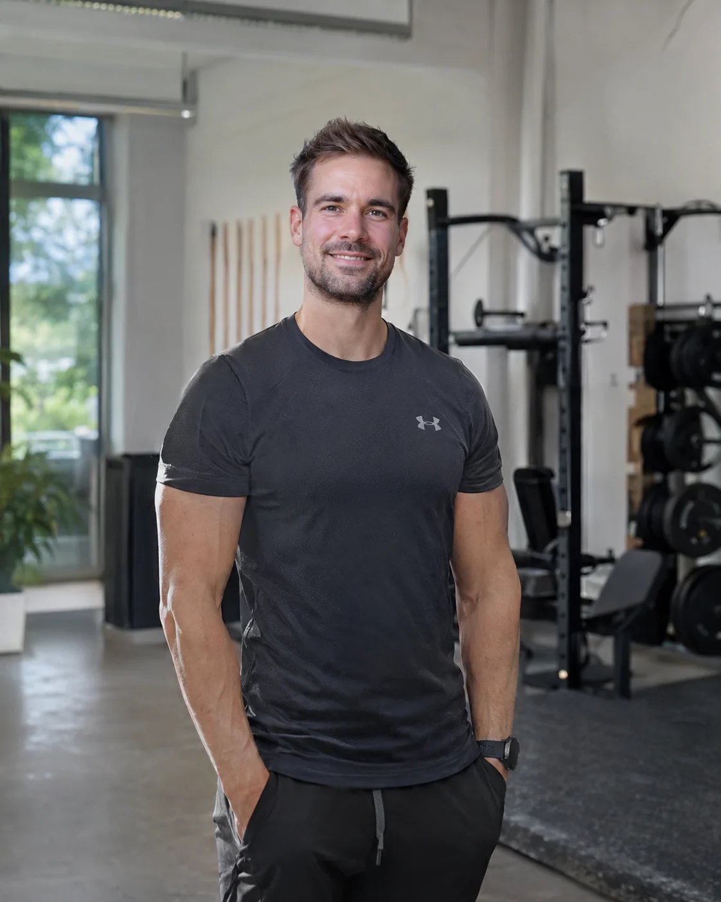
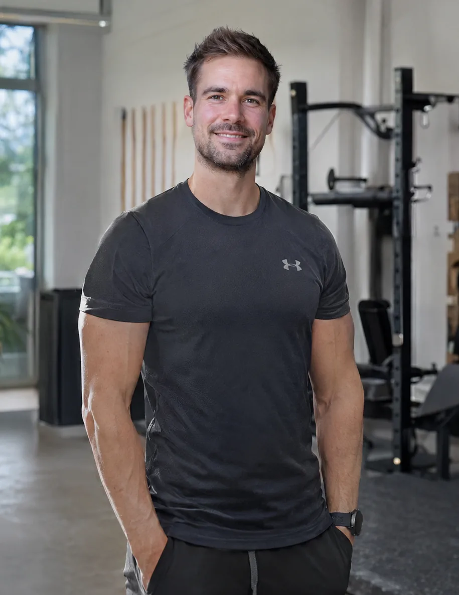

DEIN
KÖRPER.
DEIN
WEG.
Kraft aufbauen. Bewegung verstehen. Dranbleiben. Persönliches Fitness Coaching in München und online – mit einem Ansatz, der zu deinem Alltag passt.

Besser trainieren.
SONDERN MIT DEM RICHTIGEN PLAN.
DREI WEGE.
EIN ZIEL.
Du entscheidest, wo du trainierst. Gemeinsam findet ihr heraus, welche Form der Betreuung dazu passt.
Persönliches Training in deinem Zuhause – für eine Betreuung, die sich in deinen Alltag einfügt.
DEIN ZIEL.
DEIN MATCH.
Fünf kurze Fragen. Eine erste Orientierung, welches der drei Coaching-Angebote zu dir passen könnte.
SO WIRD
TRAINING
PERSÖNLICH.
Keine komplizierte Abkürzung. Sondern eine nachvollziehbare Abfolge – vom ersten Kennenlernen bis zum Training, das zum Leben passt.
Gespräch anfragenERSTES GESPRÄCH
Du erzählst, was du erreichen möchtest und welche Herausforderungen du im Alltag hast.
PASSENDES COACHING
Ihr besprecht gemeinsam, welche Betreuung und welcher Trainingsrahmen geeignet sind.
TRAINING & FEEDBACK
Der Fokus liegt auf der praktischen Umsetzung – mit klaren Schritten und dem richtigen Tempo.
FORTSCHRITT IM BLICK
Beobachte Entwicklung nicht nur auf der Waage, sondern auch in Kraft, Technik und Beständigkeit.
KENN DEINEN
BEDARF.
Wie viel Energie benötigt dein Körper ungefähr? Berechne deinen geschätzten Tagesbedarf als ersten Anhaltspunkt. Kein Ersatz für eine individuelle Ernährungsberatung.
Die Berechnung erfolgt direkt auf deinem Gerät. Deine Eingaben werden nicht an uns übertragen.
Schätzung mit Mifflin-St-Jeor und Aktivitätsfaktor. Makros sind Richtwerte, keine persönliche Empfehlung. Nicht für Minderjährige oder besondere medizinische Situationen geeignet.

NICHT
IRGENDWER.
SEBASTIAN.
Wer dich trainiert, macht einen Unterschied. Lerne Sebastian kennen und erfahre, welche Rolle Technik, Kraft und ein realistischer Trainingsalltag im Coaching spielen.
Mehr über SebastianMEHR ALS
EINE ZAHL.
Ergebnisse zeigen sich auf unterschiedliche Weise. Entscheidend ist, was langfristig im Training und Alltag funktioniert.
Mehr Kraft
Übungen besser beherrschen und Fortschritte im persönlichen Trainingsniveau beobachten.
Bessere Bewegung
Bewusster trainieren, Bewegungsabläufe verstehen und Technik entwickeln.
Mehr Konstanz
Eine Trainingsroutine aufbauen, die nicht nach zwei Wochen wieder verschwindet.
KLARE ANTWORTEN.
Wie läuft das erste Gespräch ab?
Du schilderst deine Ziele und deine aktuelle Situation. Anschließend könnt ihr besprechen, welche Coaching-Form sinnvoll ist. Eine Terminbestätigung erfolgt persönlich.
Bietet Sebastian Coaching online und vor Ort an?
Ja. Du kannst zwischen persönliches Coaching, Training zuhause und Online Coaching.
Was kostet das Training?
Private Coaching kostet 100 € pro 60 Minuten, Elite Home Performance 120 € pro 60 Minuten und Longevity Strength Online Coaching 150 € pro 60 Minuten.
Muss ich bereits Trainingserfahrung haben?
Dein bisheriger Trainingsstand kann im Erstgespräch berücksichtigt werden. So lässt sich besprechen, welche Betreuung passend ist.
Kann ich sofort einen festen Termin buchen?
Du kannst über das Formular einen Wunschtermin anfragen. Er gilt erst nach persönlicher Rückmeldung als bestätigt.
KEIN PERFEKTER
ZEITPUNKT.
DEIN START.
Ein kurzes Gespräch reicht, um herauszufinden, welches Coaching zu dir und deinem Alltag passt.
Erstgespräch anfragen